Verneuil 2007

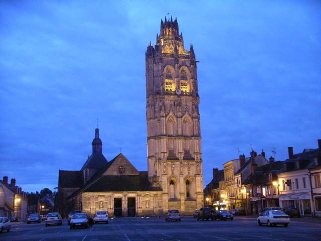
Trente ans, le CVCF a 30 ans ! Nous avons fêté cela à Verneuil, exactement derrière l'Ecole des Riches, enfin, non, des Roches (je ne sais pas pourquoi, c'est plat comme la Beauce...), sur le terrain de prédilection de François Périault, notre nouveau président qui a tout organisé presque tout seul !

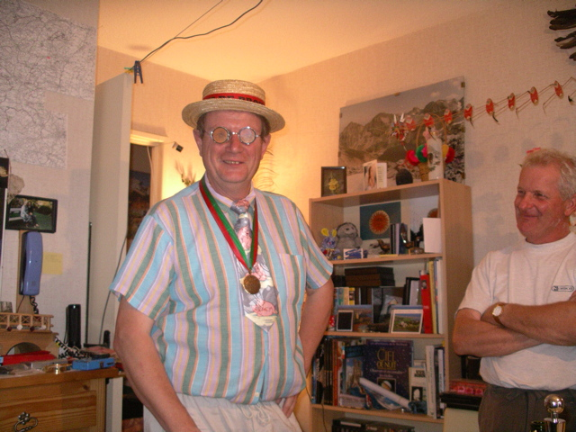
Il exhibe tous ses accessoires, les emblèmes de la confrérie des vignerons de Brouilly et d'autres rapportés de Chine !

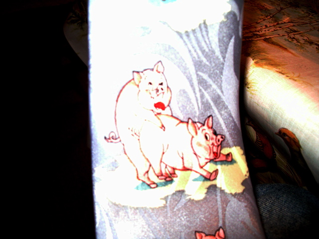
La cravate chinoise est particulièrement suggestive...

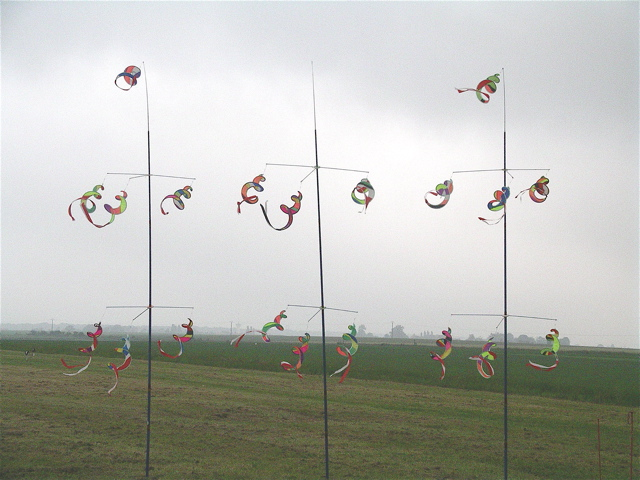
Loic est arrivé tôt et a déjà monté ses spirales rotatives... !

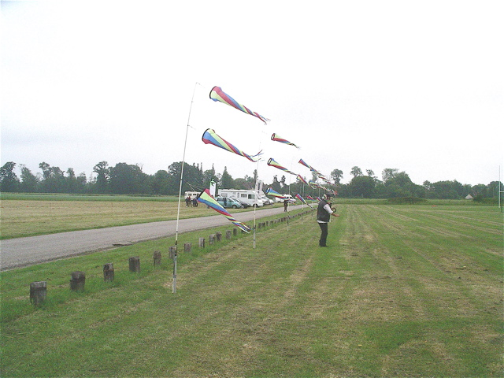
...et ses batteries de manches à air aussi rotatives que les spirales...

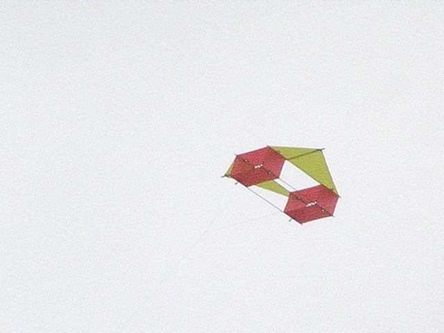
Et on voit voler le premier Madiot, emblème du club... (NB : J'appellerai ce type "Madiot" dans la suite, bien qu'il ait des rapports limités avec l'original...).

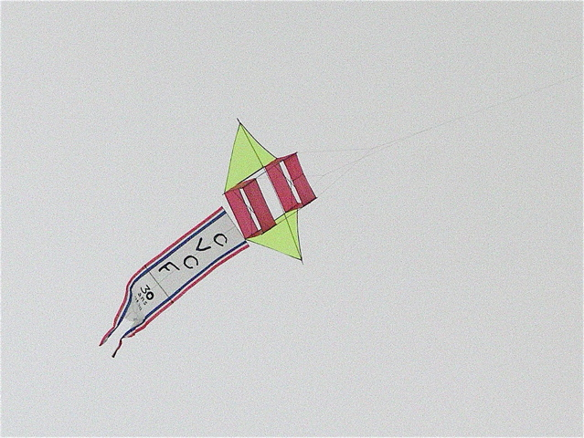
Les Madiots fleurissent, celui-ci avec une large queue qui célèbre le trentenaire du club...

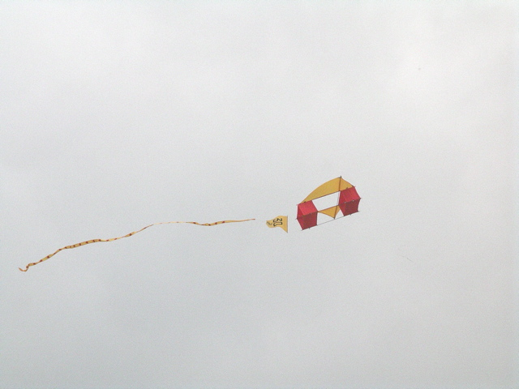
Celui-là avec une queue longue, et toujours le rappel des 30 ans...

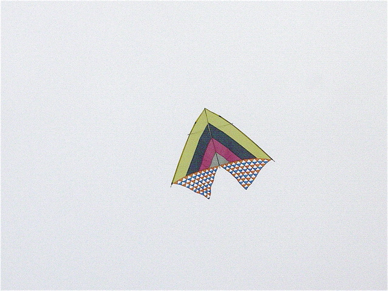
Bernard, lui, a sorti son delta à traînes courtes, avec lequel il atteint d'habitude des hauteurs inavouables...

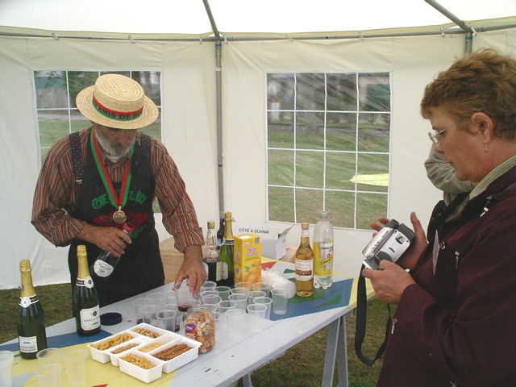
Evidemment, avant le déjeuner, un petit pot s'impose. Gaby a amené un vrai camion-citerne du Beaujolais : du blanc, du rouge, du vin méthode champenoise, etc... Et il met la main à la pâte, dans le robuste barnum qu'il a acheté pour la circonstance !

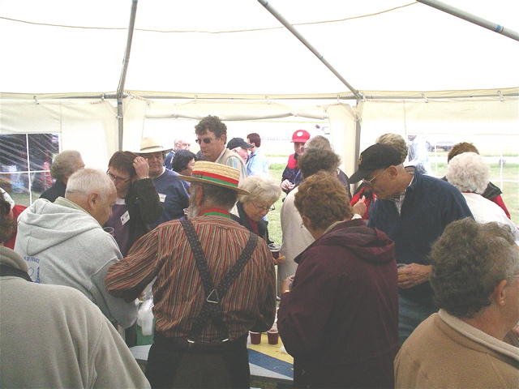
Et tout le monde range les cerfs-volants, pour participer aux festivités...

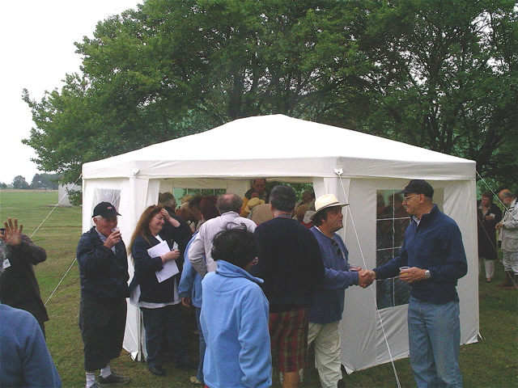
Il y a même trop de monde pour tenir dans le barnum, on est bien dehors, même si François a monté un autre barnum au cas où...

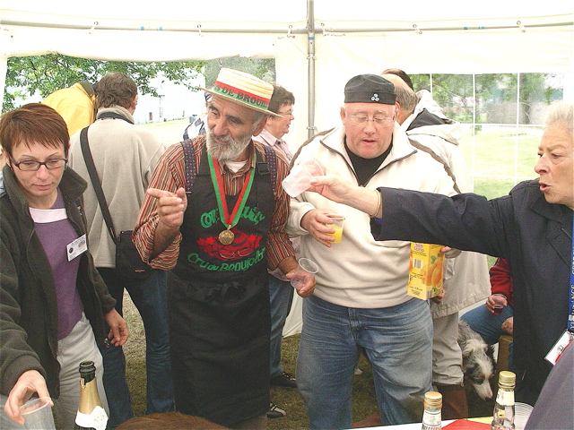
Terminé le pot, il faut ranger, Marthe participe avec son style particulier...

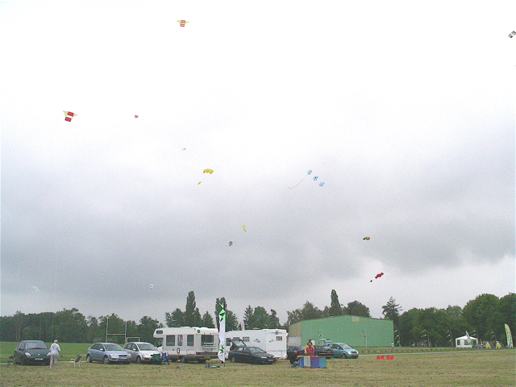
On a déjeuné, temps de se remettre au cerf-volant et ça monte de partout ...

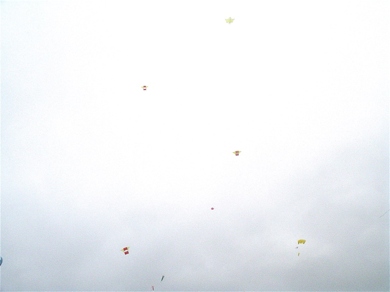
Des Madiots, bien sûr, mais aussi de tout, et des vrais cerfs-volants de gens sérieux et passionnés par la construction personnelle...

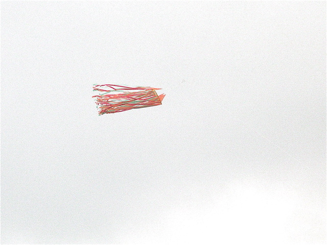
Une belle queue tourne tranquillement à mi-hauteur...

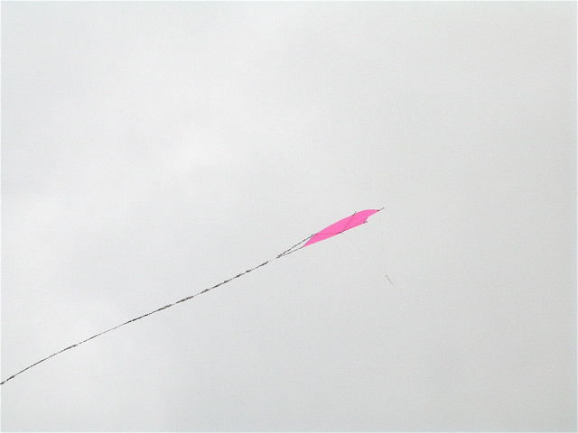
Un Pétillon complètement plat, peut-être à Mister Caraffini qui en fait avec des parapluies !

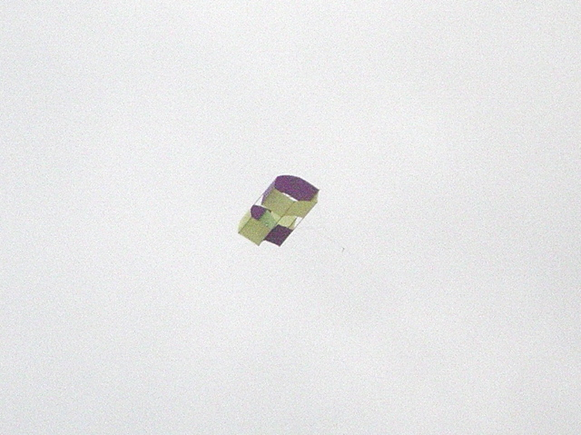
Et un Calomil, à Christian, je crois, bien que je lui attribue toujours des CVs qui ne sont pas à lui...

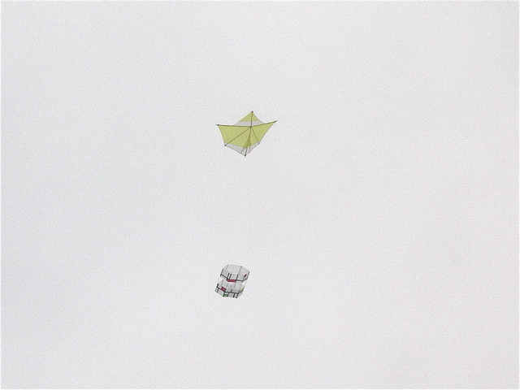
Le Jessica vole avec un autre Calomil, sans doute à Daniel Durieux (vous savez, le président sortant...) avec sa déco style Mondrian...

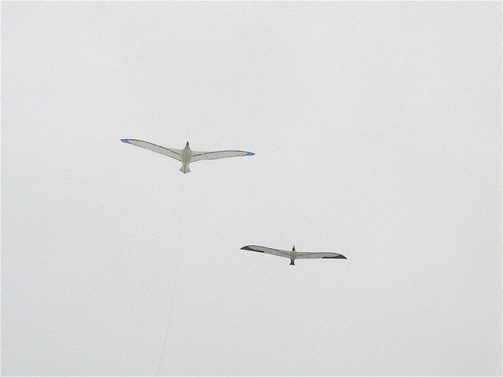
Moi, je fais voler mon Albatros2 rescapé de Brie après de nombreuses recherches, avec le 1 de Jean-Marc, comme cela, vous pourrez comparer les formes du 1 et du 2 !

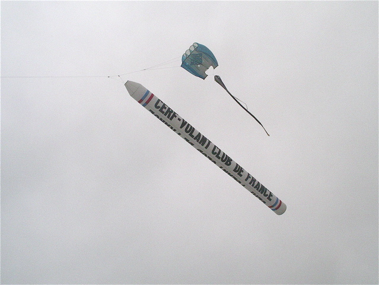
Evidemment, la grande manche à air du CVCF est de sortie, c'est Claude Lebourgeois qui la détient en ce moment, il la monte sous son flow-form celtique...

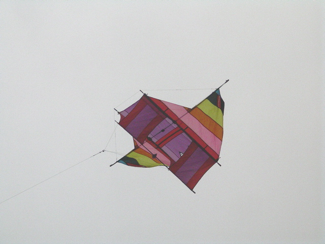
Bernard a changé de monture et envoyé son météo. Il est un peu spécial (bon, la couleur, mais pas que ça....) : Bernard a diminué la voilure, sinon il montait bien, mais on ne pouvait pratiquement plus le redescendre, il fallait quelquefois s'y mettre à trois !

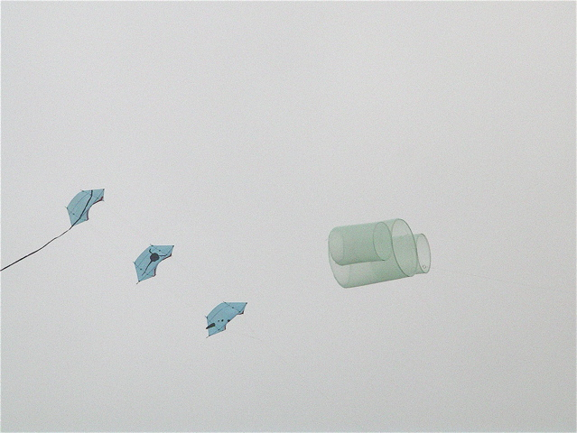
Emmanuel a mis en l'air ses tubes jumelés. D'un air très fragile et malgré un vent assez fort, ils résistent bien et sont très stables. Ils ont juste un jonc au bord d'attaque, comme des Circoflex accouplés...

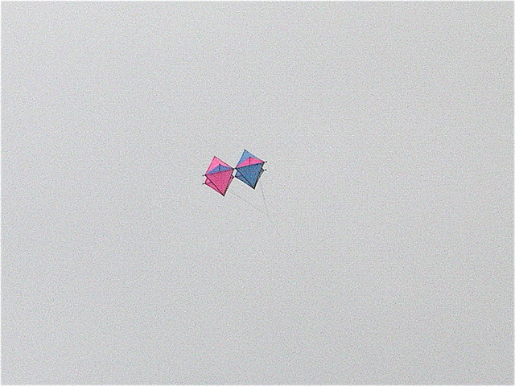
On voit aussi un cellulaire simple, genre Pellibox, très bien tendu.

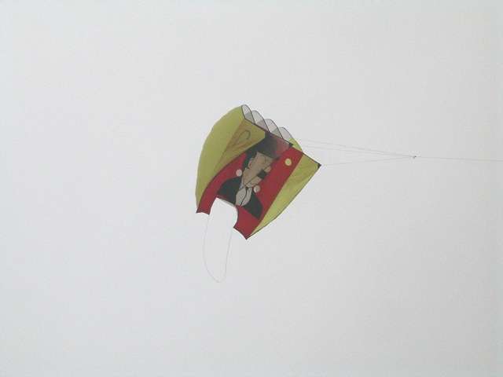
Un flow-form court et rond, comme ceux de Claude, avec un détective en déco...

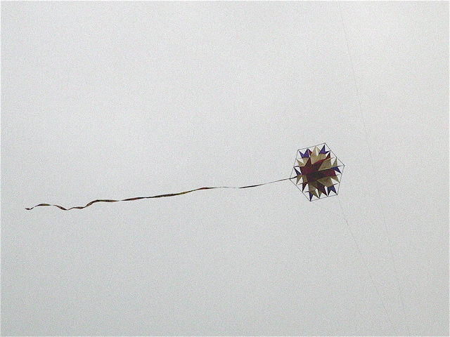
La météo ne permet malheureusement pas de faire éclater les couleurs de ce flocon à armature externe !

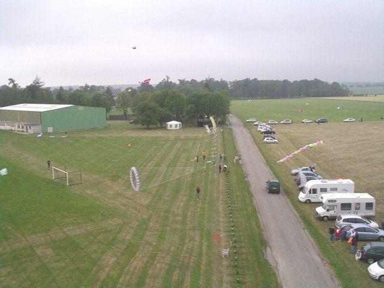
Le vent est bon, j'en profite pour faire un peu de photo aérienne sous mon Albatros2... avec mon fil de cuivre comme nacelle. Ca bouge un peu en lacet, mais la vitesse d'obturation est suffisante pour étaler ça. Les terrains s'étendent des 2 côtés de la route (peu fréquentée, heureusement).

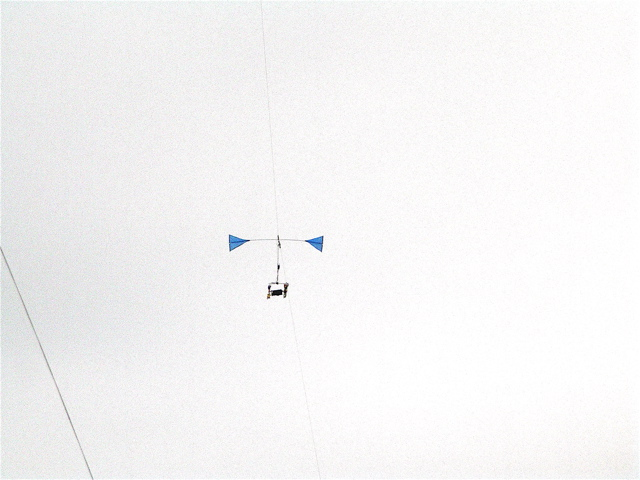
Christian Bécot est aussi en train d'opérer, je vois ses oreilles...

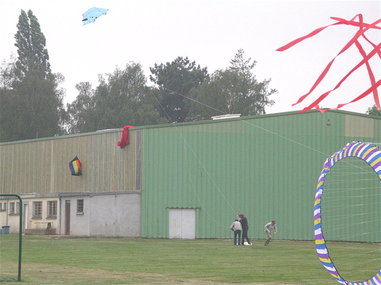
Il y a 20 hectares de terrain, mais évidemment, le hangar s'est jeté sur un cerf-volant et on met en scène un sauvetage pour animer la rencontre...

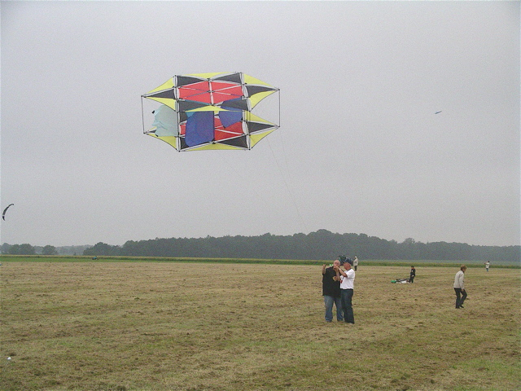
Philippe Burger expérimente encore son espèce de roue-étoile, mais à armature plane. Elle ne vole pas mal, encore un peu balançante mais c'est normal, les dérives ne sont pas encore fixées comme il convient. Il peut aussi mettre les toiles verticalement et voler en mode "flocon" (voir reportage Vierzon)...

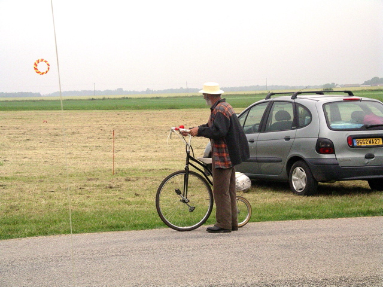
Gaby, bien sûr a amené son magnifique vélo, il en a fait, des festivals, celui-là !

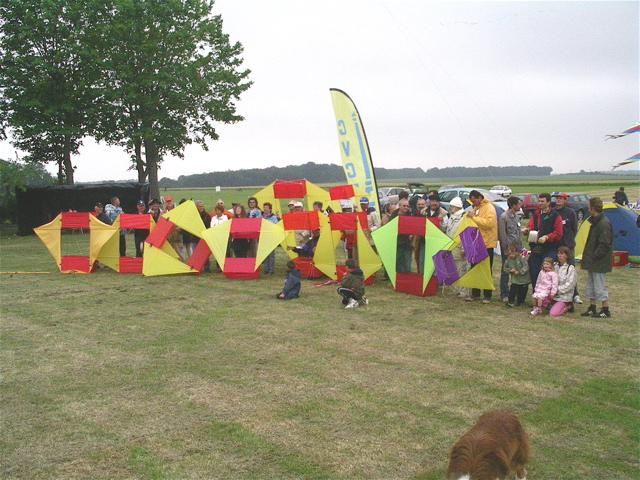
Avant la pause, photo de groupe des madiotistes...

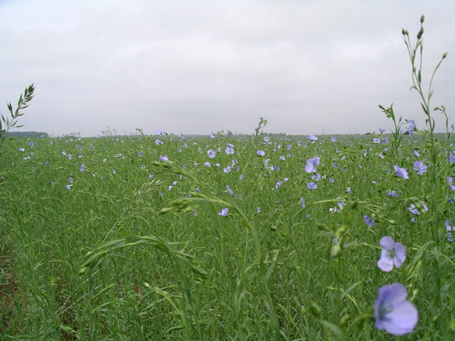
Au bout du terrain, le lin commence à fleurir...

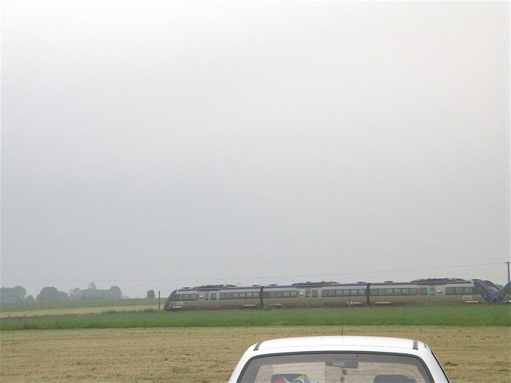
Après le lin, la voie ferrée avec des TER qui passent régulièrement, il y en a même certains qui klaxonnent pour ajouter à l'ambiance !

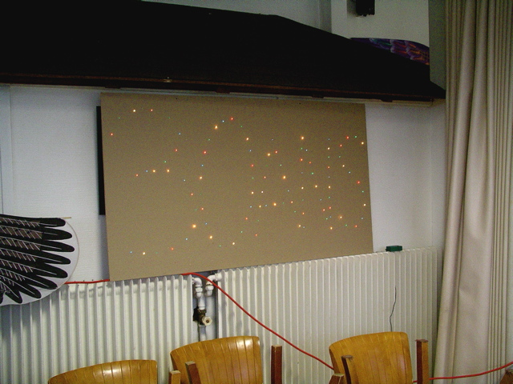
Retour au restaurant de l'Ecole. François a préparé une enseigne lumineuse clignotante, bien visible quand il fait sombre comme aujourd'hui !

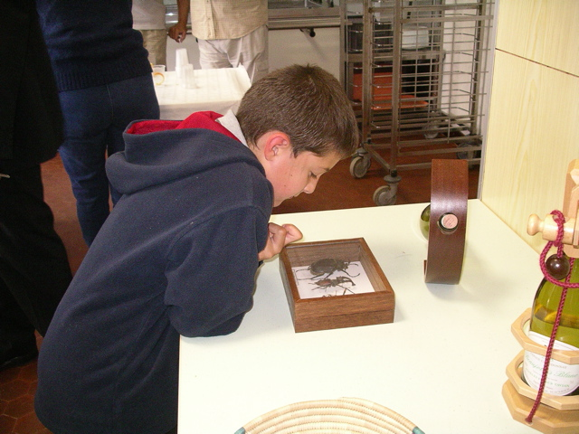
Quelqu'un a apporté des lucanes pour honorer notre Logo. Enfin, des lucanes exotiques, et de taille impressionnante...

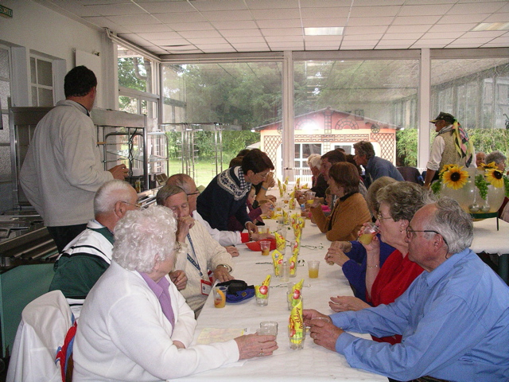
Les passionnés se regroupent par affinités, ici la table des cerfs-volantistes...

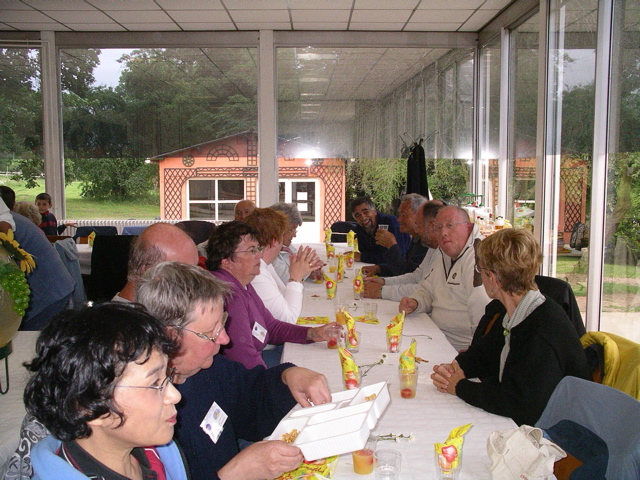
Et là, la table des jeunes (moins de 70 ans...) !
A partir d'ici, les photos sont de Michelle et Patrick L'Higuinen, j'ai bêtement écrasé les miennes. Merci à eux et à leur réponse rapide.

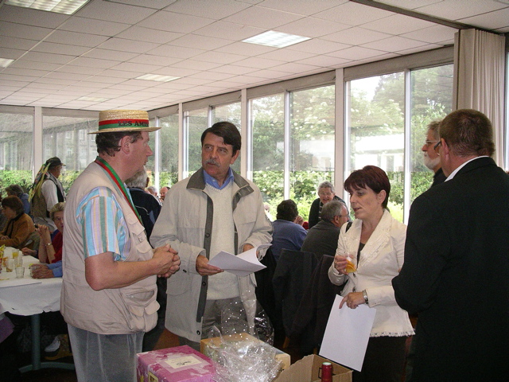
Même le Maire et quelques personnalités sont venus nous voir, espérons qu'ils ont été intéressés malgré une météo du dimanche médiocre qui n'a pas permis beaucoup d'envols...

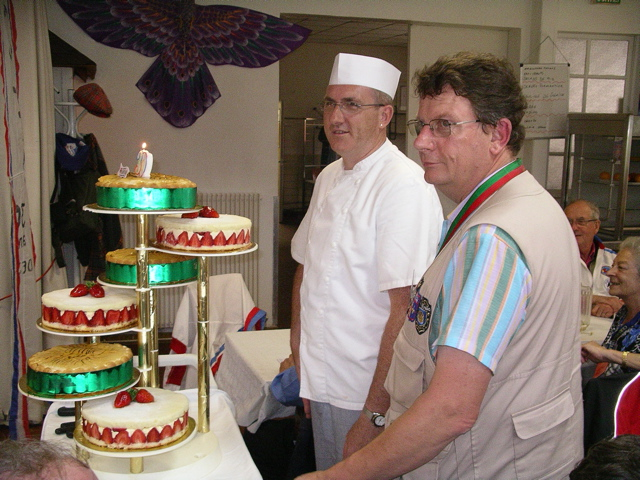
Le chef vient faire admirer les gâteaux (la pièce montée si on a de l'imagination...). Poires et fraises, on peut même choisir... ou prendre les deux !

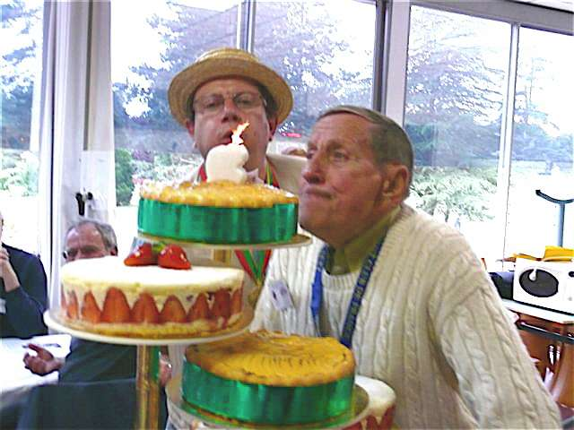
Guy est le doyen, et encore en exercice. C'est à lui que revient l'honneur de souffler la bougie symbolique...

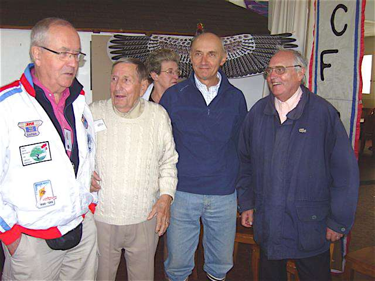
On fait des photos de classe, d'abord celle des pionniers qui ont un numéro CVCF à 2 chiffres, il faut le faire... Puis celle des 3 chiffres, puis des 4 chiffres, mais là il y a tout le monde ! Je ne sais pas s'il y aura un jour des 5 chiffres, que je fasse figure d'ancien avec mes 4...

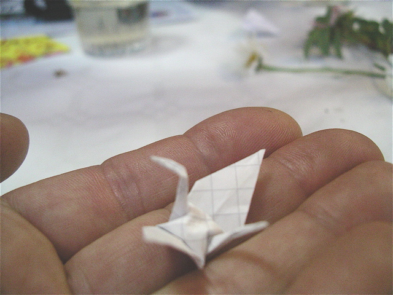
Parmi les petits jeux de table, Minoli pratique l'Ikebana et fait un pliage de grue dans une grande feuille puis avec les petits restes...

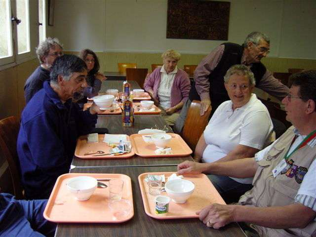
Après un vol de nuit improvisé, mais avec quand même des projecteurs branchés sur les voitures, dodo ! Le lendemain, petit-déjeuner à volonté au restaurant...

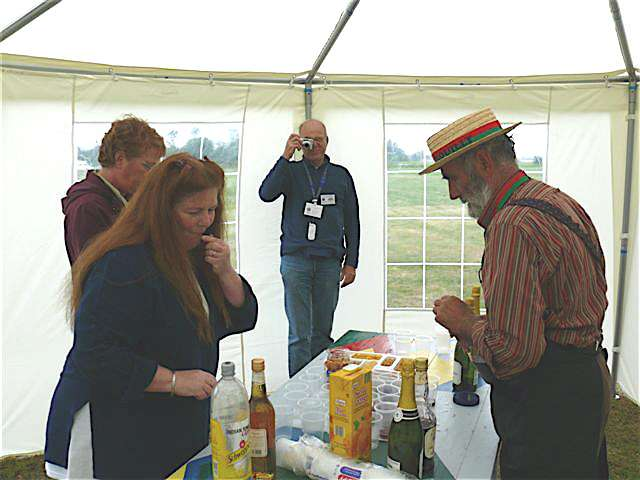
Dimanche matin, peu de vols, il tombe des cordes, ça s'améliore un peu en fin de matinée, trop tard, c'est l'heure du dernier pot. C'est encore Gaby qui s'y colle...

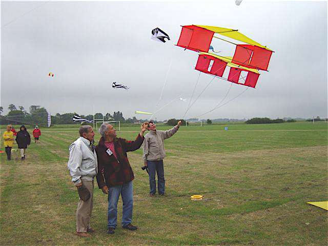
Une éclaircie, les Madiots repartent à l'assaut et font preuve de leur belle stabilité...

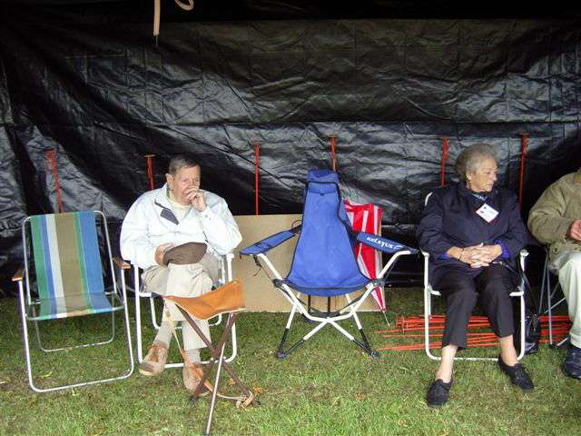
Bon, il repleut, les participants partent petit à petit, ceux qui restent se mettent à l'abri sous le barnum de François...

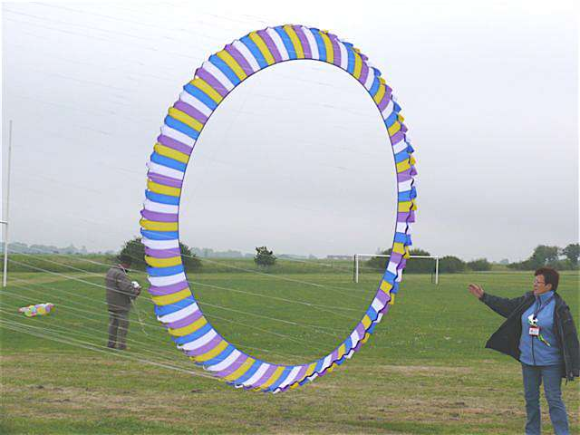
Loic a aussi monté un bol tout fin, accroché à une grande perche, et Jacqueline surveille...

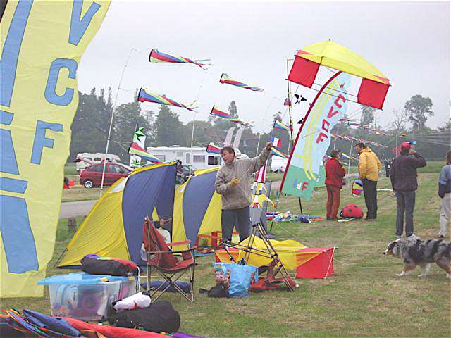
Le camp a quand même été bien meublé, avec plusieurs camping-cars, des gens venus de loin, de Vierzon par exemple le dimanche ! Mais là, les Madiot rejoignent la terre ferme et les sacs...
Nous resterons encore un moment pour démonter une bonne partie des installations et ranger ce qui peut l'être, surtout dans le camping-car de Gaby après l'avoir tiré sur 200 m pour le faire démarrer (finalement, il démarrera tout seul en passant en mode gaz) ! On démonte son barnum, les tables, les bouteilles restantes (c'est pas le plus dur, reste pas grand-chose !) et François terminera demain avec Jean-Marc et Marie-Claude, et peut-être Gaby qui dormira là ce soir.
Un grand week-end, bien organisé, et un super terrain. La météo n'a pas récompensé les efforts, surtout le dimanche, mais bah, ça a permis de discuter plus longtemps entre nous ! Merci au CVCF et en particulier à François, bravo et au 40ème !